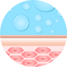
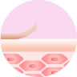

Полина Гагарина
, амабассадор бренда, певица
“
Секрет красоты моей кожи – очищение
2 раза в день, без сухости
“
Продолжить
Смотреть видео
prev
Next
Выбери идеальные средства для очищения
К какому типу относится твоя кожа?

Нормальная
и комбинированная

Сухая
и чувствительная